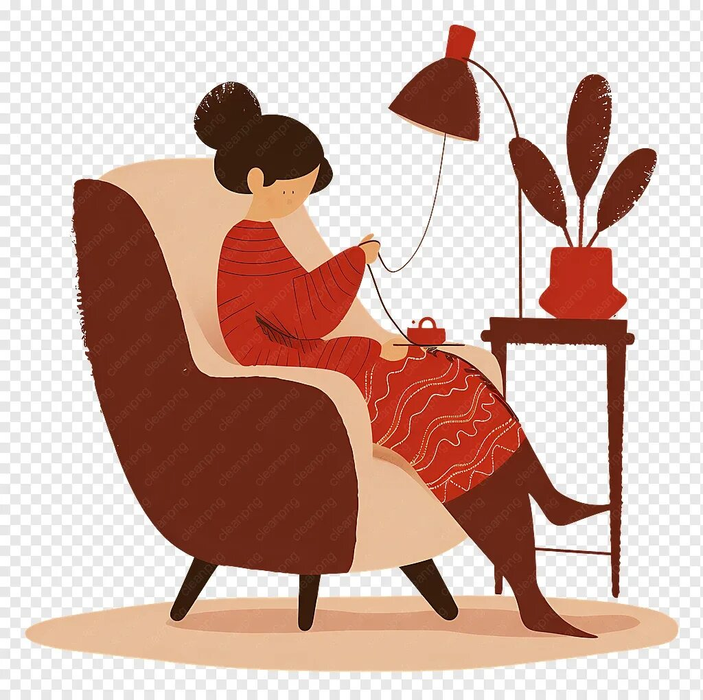

Пишет мне как-то в Telegram заказчик. Очень вежливый мужчина.
— Здравствуйте! Мне нужно интерьерное кашпо из джута. Но строго по моим параметрам. Дизайн эксклюзивный.
— Без проблем! — отвечаю я. — Давайте размеры: диаметр донышка, высоту, цвет нити.
Мужчина берет паузу на пару часов и присылает сообщение:— Диаметр донышка: примерно как две упитанные лапы. Высота: чтобы уши торчали, но хвост помещался. Цвет: под цвет наглого рыжего характера.
Я три раза перечитала сообщение. Проверила, не перепутала ли я вязание с ветеринарной клиникой. Спрашиваю:
— Извините, а что за растение мы планируем туда сажать?
— Растение зовут Иннокентий, — пишет заказчик. — И это британский кот весом в шесть килограммов. Он упорно игнорирует все покупные лежанки, но каждый раз пытается утрамбоваться в мой любимый фикус на подоконнике. Фикус уже просит о пощаде. Жена сказала, что если я не решу проблему, Кеша приватизирует и второй цветок. Спасайте.
Задача была принята! Мы подобрали самый прочный, толстый стопроцентный джут (чтобы выдержал атаку когтей). Дно я сделала усиленным, двойным, а бортики — высокими и мягкими, чтобы Кеше было удобно класть на них свою недовольную морду.
Через пять дней кашпо-лежанка уехало к заказчику. Вечером прилетает фото-отзыв: на подоконнике, рядом с выжившим фикусом, стоит новенькое джутовое кашпо. Из него победоносно торчат рыжие уши, а усы буквально расплылись в блаженстве. Иннокентий одобрил.
Мораль: Я свяжу уют для любого вашего любимца. Даже если у этого любимца лапки, хвост и характер синоптика!.
Как-то раз у меня заказали свитер оверсайз. Девушка очень просила: "Сделайте так, чтобы он был максимально свободным, уютным, чтобы в него можно было спрятаться от этого мира!".
Я рассчитала пряжу, связала шикарный, объемный кардиган крупной вязки из мягкого мериноса. На примерке клиентка была в полном восторге. Сказала, что это лучшая вещь в её жизни, закуталась в него прямо в мастерской и ушла, счастливая.
Через три дня она присылает мне фотографию. На фото — её муж, суровый мужчина под два метра ростом и косой саженью в плечах, сидит в этом свитере на диване и пьет чай. Свитер сидит на нём... как влитой. Идеальная классическая посадка, рукава копейка в копейку.
Подпись к фото: "Я потеряла свой оверсайз. Муж сказал, что этот меринос слишком хорош, чтобы отдавать его женщинам, и теперь это его официальный свитер для поездок на рыбалку. Вяжем второй, но на этот раз берите размер на великана!"
Мораль: Мой оверсайз настолько уютный, что преодолевает любые законы размеров и мужскую суровость!
Решила я как-то связать длинный, уютный кардиган в пол из толстой полушерсти. Цвет — глубокий синий, как штормовое море. На картинке в журнале модель весело куталась в него, и всё выглядело легко. Но я-то знаю: чем толще нить, тем коварнее расчеты.
Села считать петли. Сантиметры переводим в ряды, ряды умножаем на плотность, плотность делим на метраж пасмы, учитываем усадку после стирки, закладываем вес на объёмные косы… Мой рабочий стол превратился в филиал Центра управления космическими полетами. На черновиках не осталось живого места от формул. Муж зашел в комнату, посмотрел на мои графики и тихо спросил: "Ты кардиган вяжешь или рассчитываешь траекторию запуска спутника?". "Спутник запустить проще, — буркнула я, — он в процессе стирки не растягивается на три размера!".
В итоге математика сошлась, пряжа закуплена с запасом (на всякий случай). Начинаю вязать. Изделие растет, становится тяжелым, на спицах уже килограмм веса. Кардиган начинает занимать всё пространство вокруг: сначала он лежал у меня на коленях, потом занял весь диван, а под конец процесса, когда я довязывала подол, он лениво сползал на пол, заставляя меня чувствовать себя маленьким гномом, который шьет парус для пиратского корабля.
Когда пришла пора его стирать, начался настоящий квест. Вы когда-нибудь пробовали отжать вручную два килограмма мокрой шерсти? Это лучший фитнес в мире! Тренажерные залы отдыхают. Я раскладывала его на сушку на полу на три огромных махровых простыни. Мужу пришлось два дня ходить по квартире по стеночке, потому что в центре комнаты сох "Царь-Кардиган".
Зато результат превзошел все ожидания. Когда клиентка надела его, она просто зажмурилась от удовольствия. Кардиган сел сантиметр в сантиметр, мягкий, тяжелый, невероятно стильный.
Мораль: Если вам когда-нибудь покажется, что вязание — это простое хобби для бабушек, вспомните, что за каждой вещью стоит высшая математика, килограммы пряжи и легкая атлетика при стирке!
История по мотивам реальных событий
Прилетает мне как-то в мессенджер видео от подруги. Открываю, а там пушистая кошачья модель вальяжно дефилирует... (круто сказано! пытается снять с себя!) в рюшечной вязаной панамке. И следом текстовый снаряд:
— Сможешь связать такую же?
Я, как человек, глубоко уважающий кошачьи личные границы, сначала опешила.
Отвечаю:
— Могу, конечно. Но разве можно так откровенно издеваться над суверенным домашним животным? Она же тебе в тапки объявит санкции!
Подруга, даже не моргнув, выдает железную философию:— Ой, да ладно тебе! А для чего еще, по-твоему, нужны домашние любимцы? Исключительно для того, чтобы терпеть наши причуды и круглосуточно радовать хозяев своим нелепым видом!
Против такой логики не попрешь. Вызов принят!
Взяла я самый мягкий хлопковый шнур (чтобы у кошачьего величества не случилось аллергии на моду), прикинула на глаз диаметр между ушами среднестатистического кота и принялась за работу. Связала рюшечные поля, аккуратную тулью и даже сделала изящные завязочки, чтобы головной убор не улетел во время неизбежного кошачьего бунта.
Настал день примерки. Панамка была водружена на законное место.
И знаете что? Никакого бунта! Кошка замерла, осознала всю тяжесть своей неотразимости и... ей понравилось! Она даже замурчала с видом императрицы, которая наконец-то получила свою корону. - Нет, конечно же нет! Кошка со всей присущей ей мейнкуновой изворотливости пыталась снять "корону" с себя.
Подруга в диком восторге, фотосессия удалась на славу, а кошка теперь официально главная модница на районе.
Мораль: Если вы хотите порадовать себя, украсить интерьер или заказать эксклюзивный головной убор для своего четвероногого босса — вы знаете, кому писать. Свяжу всё. Даже панамку для кота!